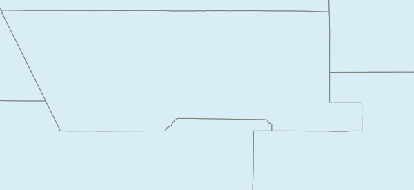
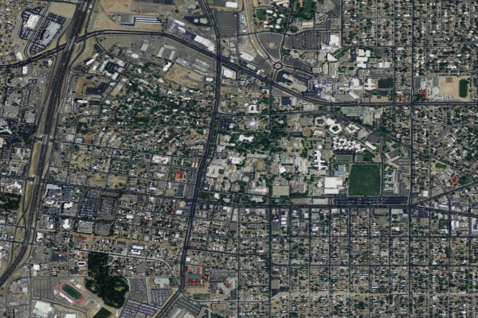

Elisa Cedillos
March 5 2014
Milestone 7
Given that McKinley County NM is contained within the following BBOX: -109.5, 34.5, -106.5, 36.5
Question 1
What is the aspect ratio of this geographic region?
width = (-106.5) - (-109.5) = 3
height = (36.5) - (34.5) = 2
aspect ratio = 3/2 = 1.5
Question 2
What would be the height (in whole pixels) for a map image for this region that is 600px wide?
(600px)/(X) = 1.5
(600px)/1.5 = 400px
Question 3
Formulate a WMS request that reflects the values determined in 1.1 and 1.2 above for the WMS service used above in the examples. Include both the actual WMS request and the returned map image.
WMS Request:
http://gstore.unm.edu/apps/rgis/datasets/97810/services/ogc/wms?VERSION=1.1.1&SERVICE=WMS&REQUEST=GetMap&BBOX=-107.2,34.7,-106,35.25&LAYERS=2007fe_35_county00&FORMAT=image/png&TRANSPARENT=TRUE&STYLES=&SRS=EPSG:4326&WIDTH=600&HEIGHT=275

Question 4
Formulate a WMS request for a 900x600 pixel map image that represents the full 3-degree width of the geographic region, and is based upon the minimum Y value of 34.5 degrees North Latitude. Include in your answer both the WMS request and the returned map image.
Question 5
Given a WMS that is represented by the following GetCapabilities request, formulate individual GetMap requests using the following parameters:
BBOX=-106.639,35.074,-106.609,35.094 WIDTH=600 HEIGHT=400
for each of the following layers: 0 (TNM_Large_Scale_Imagery) and 1 (1_foot_imagery) - yes - USGS just gave numbers as the layer names
http://raster.nationalmap.gov/ArcGIS/services/TNM_Large_Scale_Imagery/MapServer/WMSServer?request=GetCapabilities&service=WMS
WMS GetMap Request for layer: TNM_Large_Scale_Imagery
http://raster.nationalmap.gov/ArcGIS/services/TNM_Large_Scale_Imagery/MapServer/WMSServer?VERSION=1.1.1&SERVICE=WMS&REQUEST=GetMap&BBOX=-106.639,35.074,-106.609,35.094&LAYERS=0&WIDTH=600&HEIGHT=400&SRS=EPSG:4326&FORMAT=image/jpeg&STYLES=

WMS GetMap request for layer: 1_foot_imagery
http://raster.nationalmap.gov/ArcGIS/services/TNM_Large_Scale_Imagery/MapServer/WMSServer?VERSION=1.1.1&SERVICE=WMS&REQUEST=GetMap&BBOX=-106.639,35.074,-106.609,35.094&LAYERS=1&WIDTH=600&HEIGHT=400&SRS=EPSG:4326&FORMAT=image/jpeg&STYLES=
Question 6
Which layers return map images that display image content (i.e. return a non-blank image)?
Layer "TNM_Large_Scale_Imagery" returned image content.
Question 7
From examining the information for these layers in the GetCapabilities XML document - which element in each layer’s service metadata do you think provides information about the scales for which the layer will return map images containing data?
The "BoundingBox CRS=" section of the metadata explains minimum scales of each map layer for the CRS used.
Question 8
Which map images contain data for each of the following map image widths (remember to adjust the image height to match the BBOX of the request)
30 pixels
1200 pixels